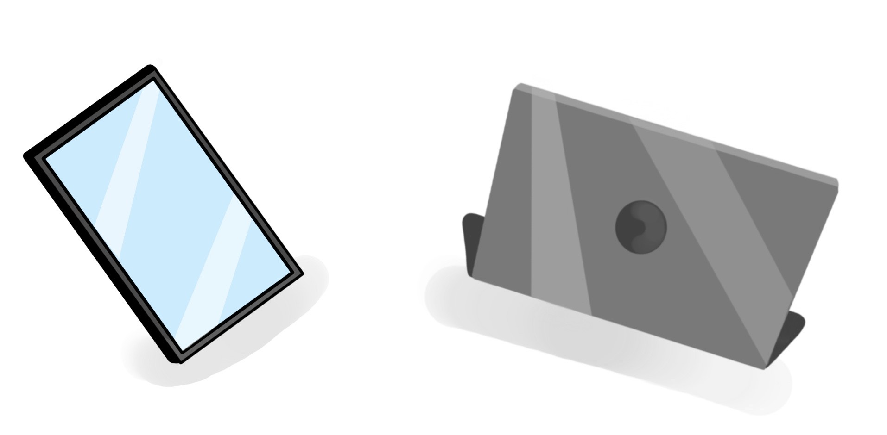

This researched aimed to identify how the use of technology can benefit children’s learning, whether this be at home or in the classroom. With Technology rapidly changing and growing learning has become boundless with so many resources to help us. Though technology can be expensive it will be a brilliant investment for the future of children and education. By introducing technology into education as a young child this will ensure that our children are fully equipped with much better tools and knowledge for their transition into higher education and into working life.
Although technology can have its positives there can be negatives to it when taken advantage of and misused, we should choose the appropriate use of technology and reap the benefits of it. There are arguments on both end of the spectrum on the topic off technology in education, some claim that it is harmful while others claim it is beneficial. Both children and technology are the future. The classroom of the future is something no one can expect, technology has rapidly grown in the last decade so who knows where it will be in the next 10/20 years. Whiteboards and tablets will be used for many more years as it has aided children’s learning very much in the last 5-10 years with more school starting to integrate iPads into their lessons.
Overall, Integrating technology with children and education it is all about balance. Achieving a healthy balance is very important and ensures that technology is being used to its best ability within education. We are surrounded by technology and it can be very easy to get overwhelmed and struggle on finding the appropriate balance, However once achieved can be very helpful and beneficial aiding children in education.
